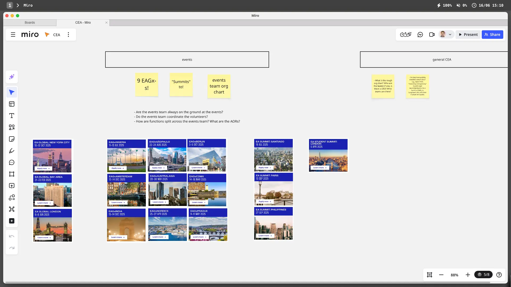

- 2025-06-16
- I have a job interview with them today!
- I have a rough model, but now is a good time to make some predictions
My model/predictions
- The CEA is the organisation that organises events - 95%
- ✅ - I meant to say events like the conferences
- The CEA the main “meta” organisation in the EA space (the org specifically about the EA space) - 95%
- GiveWell, Open Phil are the main grantmakers, 80,000 Hours is the career advice org, vs EAG is meta
- ✅ correct!
- CEA coordinates EA volunteer efforts, e.g. EA community building, regional groups (95%)
- ✅ correct
- CEA’s main functions are events & community building, and I guess also the forum but that feels more simple/secondary - 70%
- Decent chance I’m forgetting something obvious here…
- ✅ correct
- Global conferences
- Supporting student and city groups
- Community support
- Online resources and a Forum
- Communications
- Will McAskill is part of the senior leadership (perhaps by being on the board)
- 80%
- ❌ damn! He’s not on their website & no mention on e.g. wikipedia of him being on the board. He totally could be, but I can’t find any evidence. Also maybe there isn’t a board, idk how these things work
- Will McAskill and Toby Ord founded the CEA - 60%
- My “how did EA start” model is poor but this feels kinda right, I feel like Will & Toby (inspired by Singer) are the two OGs
- ✅ nice
- CEA runs/hosts/maintains/is responsible for the EA forum - 99%
- ✅
- CEA was founded after 2008 - 80%
- I forget when EA started, I think like 2011
- ✅
- CEA has an office in London - 80%
- I’m getting a little confused re: who has offices in London vs Oxford…
- ❓ they actually may have one in London, but it says online that they’re Oxford-based! And I can’t find anything written up re: them having a London office
- I’m gonna leave this prediction open and ask someone, maybe my interviewer
- CEA has a US office too - 70%
- When I think CEA I think London/UK (pretty sure Toby Ord and Will McAskill met at Oxford?)
- But it seems likely that one of the biggest EA orgs would have remote workers, and also that there’d be enough Americans working at CEA and living in San Fran/NYC/DC to make an office somewhere make sense
- But there is a world where CEA is fully remote…
- ❓ - can’t find an answer, but it may just not be publicly broadcast. Will ask someone!
Things I don’t know
- What is the rough org chart? Who are the leaders? Like, is there a CEO? What teams are there?
- Do they have publicly available culture docs? E.g., Open Phil’s “reasoning transparency” is public (got recommended to me a bunch at EAG), vs Longview’s doc with their 5 values isn’t public
- Who founded it? What has its trajectory been? E.g., I’ve heard about some EA orgs being like “spun out”
The role I’m applying for is in the events team - idk much about events!
- How many EAGs are there per year?
- I think it’s London and then at least one American one
- My mode is “one UK, one US”
- But now I’m wondering, because maybe there’s like an EAG San Fran, and EAG Boston, and EAG New York?
- 🤔 Prediction → there is only 1 American EAG per year → 40%
- I think there’ll be a West Coast EAG, an East Coast EAG, and a London EAG. I think that’s the set
- ❌ → as expected, there’s one on each coast!
- 🤔 Prediction → the EAGs are West Coast + East Coast + London → 60%
- ✅ hell yeah! Bay + NYC + London
- 🤔 Prediction → there is >1 American EAG per year → 70%
- ✅ yeah boiiii
- 🤔 Prediction → EAG London is the only European EAG per year → 80%
- ✅ Yep!
- 🤔 Prediction → EAGs only occur in Europe + North America (the rest are EAGx-s) → 90%
- ✅
- How many EAGx-s are there per year?
- 🤔 Prediction → there are >5 EAGx-s per year → 80%
- I’ve heard of… Berlin, maybe Prague, maybe the Philippines? And no doubt they’ll be others, an easy >5 IMO
- ✅ By my count on the website, it’s 9 in 2025 → Prague, Nordics, CDMX, India, Amsterdam, Australasia, Berlin, Sao Paulo, Nigeria. So cool!!!
- 🤔 Prediction → there are >15 EAGx-s per year → 30%
- ❌
- 🤔 Prediction → there are >=30 EAGx-s per year → 5% → that’d be mad
- ❌
- 🤔 Prediction → there are >5 EAGx-s per year → 80%
- How big is the events team?
- 🤔 Prediction → the CEA events team is <10 people → 60% → lean team seems right
- ❌ No, it’s 12!
- 🤔 Prediction → the CEA events team is 10-20 people → 40% → could imagine like 10 or 11
- ✅ it’s 12!
- 🤔 Prediction → the CEA events team is >20 people → 1%
- ❌ as expected, nice
- 🤔 Prediction → the CEA events team is <10 people → 60% → lean team seems right
- What is the org chart of the events team?
- Are the events team always on the ground at the events?
- Do the events team coordinate the volunteers?
- How are functions split across the events team? What are the AORs?
Starting a Miro board
- I’m a huge huge huge fan of Miro for knowledge management/project management

Current confusions
- I feel surprised, actually, that a team of 11 can run 3 EAGs and 9 EAGx-s per year. Like, there must be a lot of logistics involved!!
- Although perhaps it was hardest at first and now they have great SOPs, already scoped out venues, already know the recipe for a successful EAG, a successful EAGx
- Makes me wonder - when was the first EAG? When did EAGx-s become a thing?
- 2015 - 2 events (3 years after CEA founding)